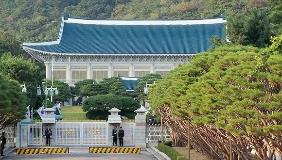

全球多地现新冠病毒社区传播迹象，尚未达到旅游警示标准
原文链接 备份链接 韩国发生新冠肺炎超级传播事件，美国担忧日本、新加坡、韩国、泰国及越南等国及台湾地区出现社区传播 文 |《财经》特派记者 金焱 发自华盛顿 编辑 | 苏琦 当地时间2月20日，美国疾病控制与预防中心(CDC)在网站上指 …

韩国青瓦台。图片来源：维基百科
记者 ：肖恩
“
韩国已累计确诊204新冠肺炎病例，是海外病例第二多的国家，仅次于邻国日本。
”
在教会和军队相继出现新型冠状病毒肺炎感染病例后，十几名来自韩国总统府青瓦台的警卫也因为曾与确诊患者在同一医院就诊，被要求自行隔离两周。与此同时，韩国2月21日报告确诊病例激增100人，病患总数翻倍，已达204人。
据韩国《中央日报》消息，韩国疾病管理本部20日通报称，一名居住在首尔的75岁男性成为韩国第56例新冠肺炎确诊患者。调查显示，该患者曾于2月6日至17日之间先后五次前往景福宫站附近的光化门Hana耳鼻喉科医院就诊。该医院距离青瓦台只有1公里距离，青瓦台的警卫警员经常前往就医。
第56例确诊患者的活动轨迹公开后，首尔地方警察厅针对前往该医院就医过的警察进行了调查统计，发现有20多名首尔厅下属的警员在这一期间到过该医院。其中，十多人属于负责青瓦台内部警卫工作的101警卫团，负责在青瓦台外围警卫的202警卫团也有警员到这个医院就诊。
2月21日，韩国警方相关人士表示，已经要求可能与患者有过接触的警员从最后一次前往眼鼻喉科医院就诊的日期算起，在家休息14天。
据悉，青瓦台的消防队成员中，也有人与第56例患者在同一天前往过这家医院。青瓦台警卫团和总统警卫处最近刚进行完内部防疫工作。
对于是否有警员和发生集聚性感染的“新天地”教会相关人员进行接触的情况，警方表示并未对此展开调查，也未要求警员主动申报。
青瓦台一直免费开放给预约游客进入参观，但有青瓦台幕僚21日接受韩联社采访时称，鉴于新冠肺炎疫情扩散的情况，青瓦台正在考虑暂停游客入内参观。上一次青瓦台叫停外国游客参观是在2009年9月甲流肆虐时，直到六个月后的2010年3月才重新对外开放。
就在前一天（20日），韩国总统文在寅和夫人金正淑刚刚与获得奥斯卡最佳影片的电影《寄生虫》主创人员在青瓦台共进午餐。导演奉俊昊和宋康昊、李善均、曹汝贞等演员，以及文化体育观光部长官朴良雨均出席。
截至21日下午，韩国累计确诊204新冠肺炎病例，其中16人治愈出院，是海外确诊病例第二多的国家，仅次于邻国日本。韩国中央防疫对策本部本部长郑银敬21日在例行记者会上表示，有6至7名确诊患者病情相对较重，集中在庆尚北道清道郡大南医院。韩国第一例新冠肺炎死亡病例就出现在该医院。
此外在1月31日至2月2日，韩国第31例确诊患者曾在该医院参加“新天地”教主胞兄的葬礼。韩联社称，可能有不少“新天地”教徒参加了葬礼。
截至21日下午4时，韩国再新增48例确诊病例，其中46例与新天地大邱教会有关，42个病例发生在大邱市。而在此前确诊的156例病例中，也有98人与新天地大邱教会有关。这就是说，在目前确诊的全部204名患者中，有144人与教会有关。
韩国中央防疫对策本部长郑银敬表示，此次疫情是由单一感染导致的较大规模群体感染，最初感染源虽仍在调查当中，但可以肯定的是疫情正在以某种关联性扩散。郑银敬表示，已从新天地大邱教会获取了本月9日和16日与第31例患者一起进行礼拜的1001名教徒的名单，正在对这些人员采取居家隔离措施。
世界卫生组织（WHO）在回复《中央日报》的邮件中表示，大邱发生新冠病毒集体感染，可能属于“超级传播”事件。
韩国总统文在寅21日指示，要彻查参加新天地大邱教会礼拜和庆尚北道清道郡大南医院葬礼的人员。国务总理丁世均报告了将大邱市和庆尚北道划为传染病特别管控区的防疫方案，并表示将取得教徒名单，在居家隔离状态下进行全数检测。文在寅指出，不要只坐等新天地教会提供名单，应更迅速采取对策。
韩国中央应急处置本部本部长、保健福祉部长官朴凌厚21日在记者会上表示，防疫部门认为目前韩国国内新冠肺炎疫情尚未出现全境扩散蔓延的迹象，因此决定将预警级别维持第二级“警惕”，但实际工作中将按照最高的“严重”级别加以应对。
朴凌厚表示，虽然疫情进入社区传播的初期阶段，但由于是在特定群体内出现的集中感染，且感染途径明确，因此疫情尚未进入全境扩散的地步，仍可通过现有的防疫体系予以控制。他指出，无基础病史的确诊病例多在2-3周内治愈。
文在寅20日下午和中国国家主席习近平通电话，讨论两国合作应对新冠病毒疫情的方案。两国决定共享临床治疗经验，并强化防疫合作。另外，两国首脑决定按原计划推动习近平主席今年上半年访韩。

原文链接 备份链接 韩国发生新冠肺炎超级传播事件，美国担忧日本、新加坡、韩国、泰国及越南等国及台湾地区出现社区传播 文 |《财经》特派记者 金焱 发自华盛顿 编辑 | 苏琦 当地时间2月20日，美国疾病控制与预防中心(CDC)在网站上指 …
原文链接 备份链接 澎湃新闻记者 刘栋 实习生 董安琪 新冠病毒疫情在韩国的发展突然加速。 2月20日，韩国新增53例确诊病例，超过了过去一个月所有确诊病例总和。21日上午，韩国疾病预防控制中心（KCDC）最新通报称，再新增52例确诊病 …
原文链接 备份链接 2月19日，韩国大邱市疑似出现超级传播事件的教堂附近，工作人员正在消毒。来源：中央日报 记者：潘金花 “ 大邱市一药店店员表示，MERS时期大邱没有出现确诊病例，人们并没有感到特别担心，但这次大家就像“打仗一样”，非常 …
原文链接 备份链接 首尔国立大学医院 来源：Wikicommons 记者：潘金花 “ 疫情时隔一周再度爆发，尤其是接连出现了多例感染路径尚不明确的病例，已引起了韩国卫生部门的高度警惕。 ” 在历经了一周的疫情平台期后，韩国本周再次迎来了新 …
原文链接 备份链接 【财新网】（记者 赵宁）北京大学人民医院（下称北大人民医院）有住院病人确诊为新冠肺炎的消息获得证实。与该医院相关确诊病例一共三人，分别为田某某、李某某、张某某，其中一人先由发热门诊排查，后又追溯发现了涉及医院老年科和肾 …